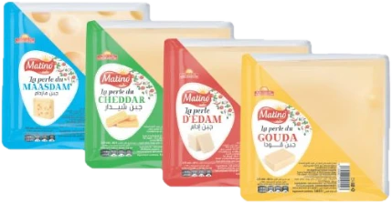

Le fromage de chaque repas algérien
Fromages à tartiner, barres, râpés, crèmes, mayonnaise et poudre de lait : Laitages du Maghreb fabrique les produits de votre cuisine de tous les jours, à El Achour.
ماتينو… كل لقمة أكثر غنى ولذة
Trois marques, une même exigence
Du petit-déjeuner au gratin
Choisissez une famille pour voir les produits.
Un industriel algérien des laitages
La société Laitages du Maghreb fabrique les produits que l’on retrouve dans notre alimentation quotidienne : nos plats et nos préparations culinaires.
Pour garantir la qualité et la sécurité de ses productions, l’entreprise s’est engagée dans un Système de Management de la Sécurité des Denrées Alimentaires.
Combien de fromage pour votre semaine ?
Indiquez votre nombre de pizzas, sandwichs ou gratins par jour : le calculateur estime votre besoin et vous met en relation avec notre service commercial.

Parlons de votre commande
Zone d’activité, Groupe 665, Lot 01, N°01 et 02, El Achour, Alger
+213 561 62 70 01 / 02 / 03 / 05 contact@laitagesdumaghreb.com